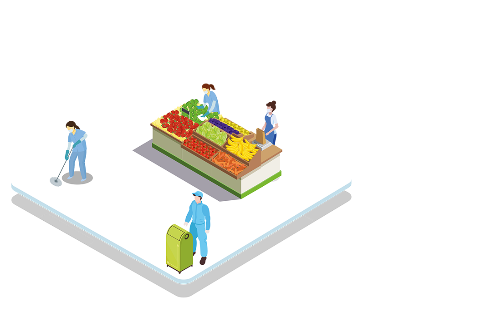

PEDOMAN oleh Kementrian Kesehatan menunjukan bagaimana perkantoran harus beroperasi selama periode transisi ini. Panduan tersebut mencakup beberapa protokol ketat, seperti penggunaan termometer tembak atau thermogun saat memasuki kantor yang sebelumnya juga diberlakukan selama PSBB. "Tempat kerja sebagai tempat interaksi dan pendampingan merupakan faktor resiko yang perlu diantisipasi oleh penularannya" kata Menteri Kesehatan Terawan di situs resmi Kementrian Kesehatan pada 23 Mei 2020.
Beberapa bisnis pun telah memberlakukan protokol mereka sendiri sesuai dengan kebutuhan atas keselamatan karyawan mereka, sembari mempertahankan kebutuhan akan produktivitas. Pemerintah juga menerapkan protokol keselamatan karyawan yang ketat, dimana pegawai negeri sipil akan dikenakan denda berat jika ketahuan melanggar protokol. Kondisi kerja yang baru ini akan membuat karyawan membatasi jumlah orang yang berhubungan dengan mereka sampai penyakit berhenti menyebar